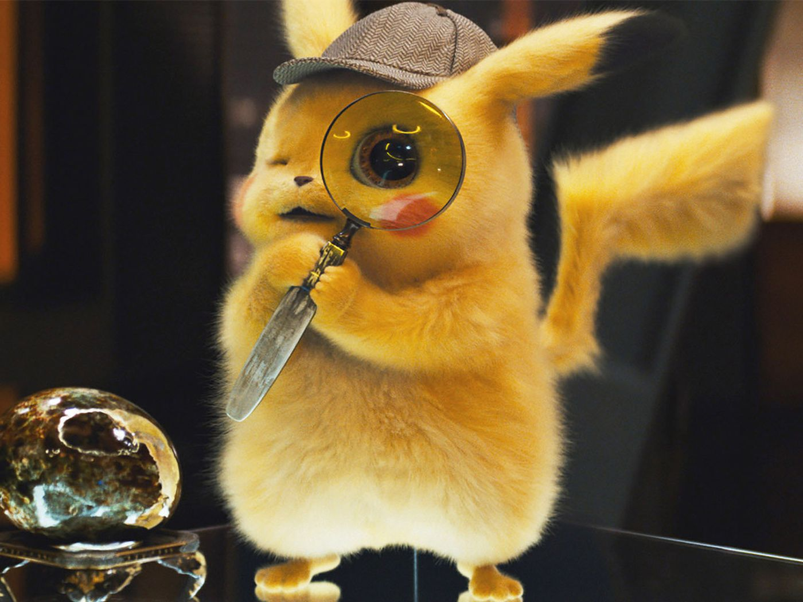

Navigation Bar
Example of Canvas and Script
Image
Picture
Links
iframe
Code
The code pop() method removes an element from the array and returns the element removed.
Datalist
Figure
Aside
The black and white "tuxedo" look donned by most penguin species is a clever camoflage called countershading.
Their white bellies help them blend in with the bright surface of the ocean when viewed by predators and prey from below.
Cool Facts about Penguins